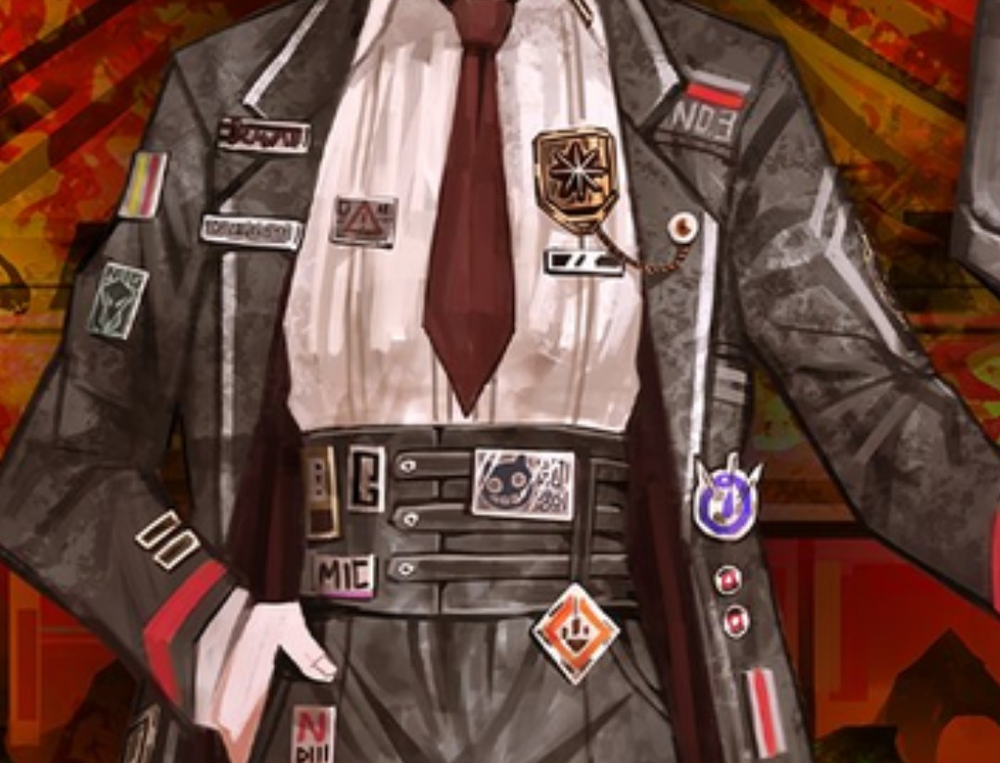

Τειρεσίας✝️
@Robert_Bumaro11
RT @MordredP_0501: tl上又有推友在说罪人真名的事情，忽然想起之前看到的一个理论就是，只有唐璐奥三人的初始立绘上出现了这种金属牌子，而其他罪人（如p4以实玛利）都没有，这证明只有他们三人用于登记的名字不是真名，刚才去看了一下还真是这样。比较有趣的是良秀并不属于…

无名燕（蜘蛛之家版）
@MordredP_0501
tl上又有推友在说罪人真名的事情，忽然想起之前看到的一个理论就是，只有唐璐奥三人的初始立绘上出现了这种金属牌子，而其他罪人（如p4以实玛利）都没有，这证明只有他们三人用于登记的名字不是真名，刚才去看了一下还真是这样。比较有趣的是良秀并不属于这个群体，目前想到的原因有两个： https://t.co/jv2taWsMfD